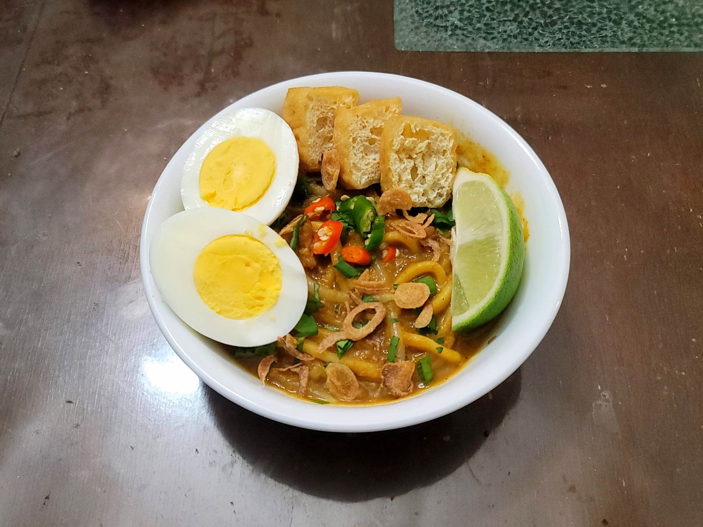

Mee Rebus

Ingredients:
Rempah (Curry Paste):
- 1 large White/Brown onion, peeled and quartered
- 1 Lemongrass, ends and tough outer layers removed, thinly sliced
- 2 inch Galangal, peeled and sliced
- 1/2 tbsp Belacan
- 2 tbsp Dried shrimp
- 1/4 cup Taucheo
- 3 tbsp Curry powder
Mee Rebus:
- 1 medium Sweet potato, peeled and cubed
- 1 tsp Salt
- 60 g Raw peanuts or 2 tbsp Smooth peanut butter
- 3 tbsp Canola oil
- 2 Lemongrass, ends removed, top layer removed if dirty, pounded
- 1/4 - 1/2 lb Ground beef
- 4 cups Water
- 1 tsp Salt
- 1 tbsp Sugar, optionally omit if using peanut butter
- 500 g Fresh egg noodles
- 100 g beansprouts, blanched
Toppings (As Many as Desired):
- 6 Eggs, hard-boiled, halved
- 200 g Tofu puffs, halved
- 3 Limes, cut into slices
- Fried shallots
- 2 Red bird's eye chilies
- 2 Green bird's eye chilies
- 2 Scallions, thinly sliced
- 1/4 bunch Cilantro, chopped
- Kicap manis, to taste
Instructions:
- Bring a pot of water with 1 tsp salt to a boil. Add in the sweet potato and boil for about 15 minutes or until tender. Then drain and mash the sweet potato. Reserve.
- If using raw peanuts, add the peanuts to a pan over medium heat and toast, tossing often, for about 5 minutes or until golden brown. Then let cool. Once cool, pulse in a food processor until a fine powder.
- For the paste, combine the paste ingredients into a food processor. Pulse until it forms a fine paste, adding a little water if necessary.
- In a large pot, heat the 3 tbsp oil over medium heat. Add the curry paste and the bruised lemongrass and sauté, stirring very frequently, for 2 minutes. Then add in the beef and sauté for about 1 minute.
- Add in the water and 1 tsp salt and stire to combine. Bring to a boil and then cover and reduce to low. Let simmer for 30 minutes.
- After the 30 minutes, Stir in the sugar and ground nuts/peanuts. Take a couple ladles of the gravy and stir it into the mashed sweet potatoes before then stirring the sweet potatoes into the gravy.
- Simmer uncovered for about 5 minutes. Then taste and adjust seasoning as needed. If the gravy is too thick, add water. If too thin, then let reduce more.
- Add in the noodles and beansprouts. Toss until evenly coated and the noodles are heated through.
- Serve hot garnished with desired toppings.